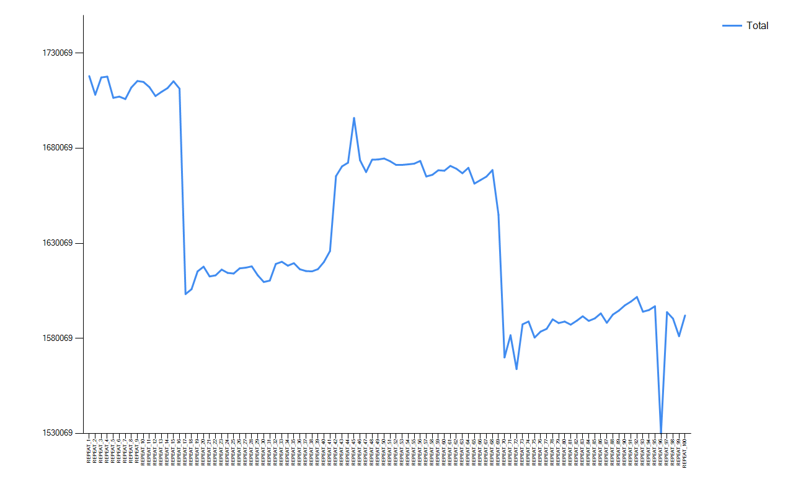
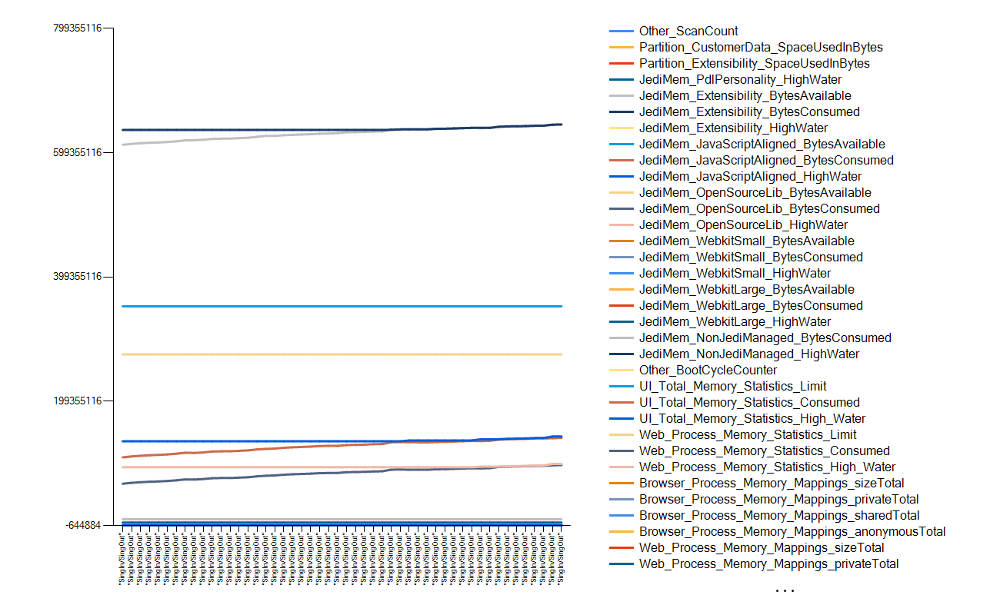
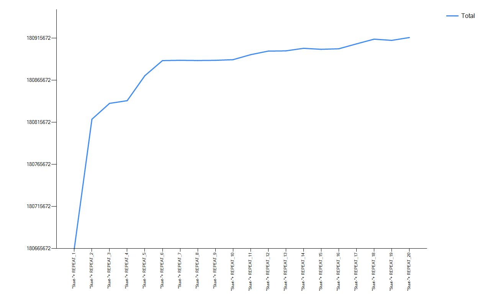

Android memory monitoring collects size of memory by process.
using Android
Memory Monitoring Example
{
// Define Memory Monitoring task
Android.Start Memory Monitoring
// Repeat test scenario and dump memory usage
Repeat:100
{
// Simple scenario : Open contacts app and click navigation drawer button and exit app.
Android.Launch (com.android.contacts)
Android.Touch XPath (//node[@content-desc='Open navigation drawer'])
Android.Press Back Key
Android.Press Back Key
Android.Press Home Key
// Collect Memory data after each repetition
Android.Collect Memory Info (REPEAT_${R})
}
// See the memory usage trend with the help of Graph.
Android.Draw Memory Usage Graph
}See the memory usage trend over repetitions (check if memory usage is increased over time) To check more details of memory usage, see the csv file in output folder. (Path of csv file is also placed in report in keyword of Start Memory Monitoring)

Find the report in csv format here
JediOmni library collects memory information of
// This test case captures JediOmni Devices Memory collectors
Using JediOmni
TestSingInSingOutLoop
{
// Define memory monitoring Task and this creates a CSV file in output folder.
JediOmni.Start Memory Monitoring
// Repeat the Sing In and Sing Out steps with the device for atleast 100 repetitions to detect memory leak in devices under test.
Repeat:50
{
// Using GFriend UI Inspector captured below controls and doing sing in and singout scenario
JediOmni.Wait For Object (hpid-control-signin,10)
JediOmni.Touch ID (hpid-control-signin)
JediOmni.Wait For Object (hpid-dropdown-agent,5)
JediOmni.Touch ID (hpid-dropdown-agent)
JediOmni.Wait For Object (hpid-dropdown-agent-hp_EmbeddedWindows_v1,5)
JediOmni.Touch ID (hpid-dropdown-agent-hp_EmbeddedWindows_v1)
// Sleep for 5 seconds for the device to load the next screen
Sleep (5)
JediOmni.Wait For Object (hpid-signin-textbox-UserNameTextBox,10)
JediOmni.Touch ID (hpid-signin-textbox-UserNameTextBox)
// Type administrator userid
JediOmni.Input Text(Administrator)
JediOmni.Wait For Object (hpid-keyboard-key-done,5)
JediOmni.Touch ID (hpid-keyboard-key-done)
// Sleep for 5 seconds for the device to load the next screen
Sleep (5)
JediOmni.Wait For Object (hpid-signin-textbox-PasswordTextBox,10)
JediOmni.Touch ID (hpid-signin-textbox-PasswordTextBox)
// Type password for the administrator
JediOmni.InputText (rdl@12345)
JediOmni.Wait For Object (hpid-keyboard-key-done,5)
JediOmni.Touch ID (hpid-keyboard-key-done)
JediOmni.Wait For Object (hpid-button-signin-ok,5)
JediOmni.Touch ID (hpid-button-signin-ok)
JediOmni.Wait For Object (hp-button-signin-or-signout,5)
JediOmni.Touch ID (hp-button-signin-or-signout)
// This method collects the memory info with the lable SignIn and Signout
// This method saves the data in CSV format
JediOmni.Collect Memory Info ("SingIn/SingOut")
}
//This method draws the graph using the memory data collected.
JediOmni.Draw Memory Usage Graph
}Memory usage graph

Find the report in csv format here
Using Windows
Test Windows Memory Monitors
{
// Starts memory Monitoring task
Windows.Start Memory Monitoring
// Repeat test scenario and dump memory usage
Repeat:20
{
// Memory Collection with repeat count
Windows.Collect Memory Info ("Start-"+ REPEAT_${R})
}
// Draw graph for all the repetitions
Windows.Draw Memory Usage Graph
}
Using Windows At localhost
Test Windows Memory Monitors
{
Remote Run:localhost
{
// Keywords to run in remote executor.
Windows.Start Memory Monitoring
Windows.Collect Memory Info ("Start")
Windows.Draw Memory Usage Graph
}
}Memory collection with remote executor. By using remote executor in solution server, you can collect solution server's memory usage while testing.
Using Windows At <SolutionServer>
Test Windows Memory Monitors
{
Remote Run:<SolutionServer>
{
// Keywords to run in remote executor.
Windows.Start Memory Monitoring
Windows.Collect Memory Info ("Start")
Windows.Draw Memory Usage Graph
// JediOmni.Capture Screen Shot ("Radiobutton")
}
}Memory usage graph

Find the report in csv format here
// running memory collectors at remote machine HPAdvanced
using Windows At HPAdvanced
using JediOmni
using Oxpd
test
{
// run the test case on remote machine
// start monitoring on the remote machine
Remote Run:HPAdvanced
{
Windows.Start Memory Monitoring
}
// repeate the steps for 100 repetitions
Repeat:100
{
// Run some solution tests
JediOmni.Touch Text(HP Advanced)
Oxpd.Get Browser Engine
// Run script on remote machine
Remote Run:HPAdvanced
{
// collect memory info
Windows.Collect Memory Info(${R})
}
// wait for completing the collection on HPAdvanced
Wait For Remote Complete (HPAdvanced)
}
// run on Remote machine
Remote Run:HPAdvanced
{
// Draw memory usage graph
Windows.Draw Memory Usage Graph
}
// wait for completion of
Wait For Remote Complete (HPAdvanced)
}